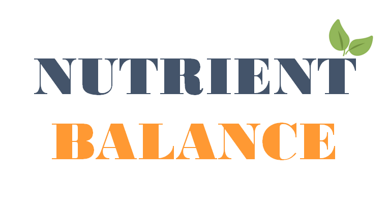

{% extends 'base.html' %}

{% block title %}
음식 분류 - 홈
{% endblock %}

{% block head %}
{{ super() }}
<link rel="stylesheet" href="https://use.fontawesome.com/releases/v5.8.1/css/all.css">
<style>
    .content-spacing {
        padding-top: 18vh; /* 원하는 크기로 조절하세요 */
    }

    .icon-search {
        font-size: 1.8rem; /* 검색 아이콘의 크기 조정 */
    }
    .icon-upload {
        font-size: 1.5rem; /* 업로드 아이콘의 크기 조정 */
    }

    /* 이미지 가운데 정렬 및 왼쪽으로 이동하는 스타일 */
    .centered-image {
        display: block;
        margin: 0 auto;
        margin-left: 10px; /* 이미지를 왼쪽으로 20px 이동 */
        width: 500px; /* 이미지의 너비를 200px로 조정 */
        height: auto; /* 높이를 자동으로 조정하여 비율 유지 */
    }
</style>

{% endblock %}

{% block content %}
<div class="container content-spacing">
    <div class="row justify-content-center">
        <div class="col-md-6 text-center">
            
            <div class="btn-group" role="group" aria-label="Basic example">
                <a href="{{ url_for('search') }}" class="btn btn-primary btn-lg">
                    <i class="fas fa-search icon-search"></i> 음식 검색
                </a>
                <a href="{{ url_for('upload_file') }}" class="btn btn-success btn-lg">
                    <i class="fas fa-upload icon-upload"></i> 이미지 업로드
                </a>
            </div>
        </div>
    </div>
</div>
{% endblock %}
